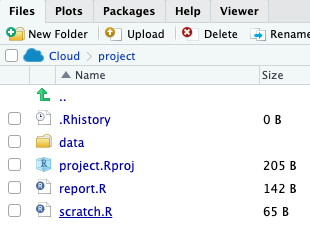
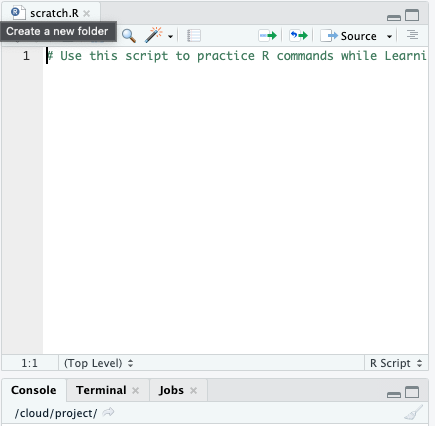
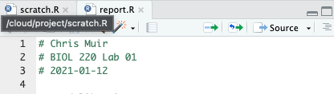
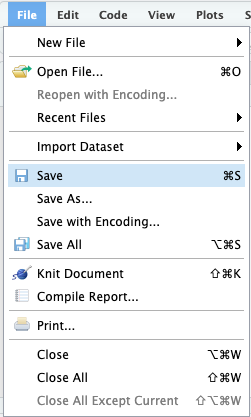

2 + 2[1] 4R is a computer program that allows an extraordinary range of statistical calculations. It is a free program, mainly written by voluntary contributions from statisticians around the world. R is available on most operating systems, including Windows, Mac OS, and Linux.
R can make graphics and do statistical calculations. It is also a full-fledged computing language. In this manual, we will only scratch the surface of what R can do.
RStudio is a separate program, also free, that provides a more elegant front end for R. RStudio allows you to easily organize separate windows for R commands, graphic, help, etc. in one place.
For this course, you won’t need R and RStudio installed on your own device because we will work in RStudio Cloud. However, if you wish to install them on your device, go to https://rstudio.com/products/rstudio/download/ for instructions about getting set up.
From here:
RStudio Cloud is a hosted version of RStudio in the cloud that makes it easy for professionals, hobbyists, trainers, teachers and students to do, share, teach and learn data science using R.
Create your analyses using RStudio directly from your browser - there is no software to install and nothing to configure on your computer.
RStudio Cloud provides many learning materials: interactive tutorials covering the basics of data science, cheatsheets for working with popular R packages and a guide to using RStudio Cloud.
Follow the instructions on the “Setup” page for setting yourself up with Posit Cloud.
Once done, proceed with the rest of the lab below.
When you start RStudio Cloud, it will automatically start R as well. You run R inside RStudio Cloud.
After you have started RStudio Cloud, you should see a new window with a menu bar at the top and three main sections. One of the sections is called the “Console” – this is where you type commands to give instructions to R and typically where you see R’s answers to you.
Another important corner of this window can show a variety of information. Most importantly to us, this is where graphics will appear, under the tab marked “Plots”.
When you start RStudio Cloud, you’ll see a corner of the window called the “Console.” By the default the console window is in the bottom left of the RStudio screen.
You can type commands in this window where there is a prompt (which will look like a > sign at the bottom of the window). The Console has to be the selected window. (Clicking anywhere in the Console selects it.)
The > prompt is R’s way of inviting you to give it instructions. You communicate with R by typing commands after the > prompt.
Type “2+2” at the > prompt, and hit return. You’ll see that R can work like a calculator (among its many other powers). It will give you the answer, 4, and it will label that answer with [1] to indicate that it is the first element in the answer. (This is sort of annoying when the answers are simple like this, but can be very valuable when the answers become more complex.)
Remember, you don’t type the > sign. The > is the prompt that R gives saying it is ready for input. We reproduce it here so you can see which is input (in blue) and which is output (in black or red).
2 + 2[1] 4You can use a wide variety of math functions to make calculations here, e.g., log() calculates the log of a number:
log(42)[1] 3.73767(By default, this gives the natural log with base \(e\).)
Parentheses are used both as a way to group elements of the calculation and also as a way to denote the arguments of functions. (The “arguments” of a function are the set of values given to it as input.) For example, log(3) is applying the function log() to the argument 3.
Another mathematical function that often comes in handy is the square root function, sqrt(). For example, the square root of 4 is:
sqrt(42)[1] 6.480741To calculate a value with an exponent, used the ^ symbol. For example \(4^3\) is written as:
4 ^ 3[1] 64Note how R ignores white space when it’s not in quotes (we’ll come back to quotes later):
4^3[1] 644 ^ 3[1] 64Of course, many math functions can be combined to give an almost infinite possibility of mathematical expressions. For example,
\[\frac{1}{\sqrt{2 \pi (3.1)^2}} e ^ {-\frac{(12 - 10.7) ^ 2}{2 \times 3.1}}\]
can be calculated with
(1 / (sqrt(2 * pi * (3.1) ^ 2))) * exp(-(12 - 10.7) ^ 2 / (2 * 3.1))[1] 0.09798692When you analyze your own data, we strongly recommend that you keep a record of all commands used, along with copious notes, so that weeks or years later you can retrace the steps of your earlier analysis.
In RStudio Cloud, you can create a plain text file (sometimes called a script), which contains R commands that can be reloaded and used at a later date. We have created a scratch file where you can enter and save your commands while you’re learning the tools. Click on “scratch.R” in the lower-right:

That will open a mostly blank text file above the Console that looks like this:

You can copy and paste any commands that you want from the Console, or type directly here. (When you copy and paste, it’s better to not include the > prompt in the script.) If you want to keep this script for later, just hit “Save” under the “File” menu. In the future you can open this file in all the normal ways to have those commands available for use again.
It is best to type all your commands in the script window and run them from there, rather than typing directly into the console. This lets you save a record of your session so that you can more easily re-create what you have done later.
FYI, if you want to create a new, blank R script, here’s how. Under the menu at the top, choose “File”, then “New File”, and then “R Script”. This will create a new section in RStudio Cloud with the temporary name “Untitled1” (or similar).
Most of the work in R is done by functions. A function has a name and one or more arguments. For example, log(4) is a function that calculates the log in base \(e\) for the value 4 given as input.
Sometimes functions have optional input arguments. For the function log(), for example, we can specify the optional input argument base to tell the function what base to use for the logarithm. If we don’t specify the base variable, it has a default value of base = e. To get a log in base 10, for example, we would use:
log(4, base = 10)[1] 0.60206In R, we can store information of various sorts by assigning them to variables. For example, if we want to create a variable called x and give it a value of 4, we would write
x <- 4The middle bit of this – a less than sign and a hyphen typed together to make something that looks a little like a left-facing arrow – tells R to assign the value on the right to the variable on the left. After running the command above, whenever we use x in a command it would be replaced by its value 4. For example, if we add 3 to x, we would expect to get 7.
x + 3[1] 7Variables in R can store more than just simple numbers. They can store lists of numbers, functions, graphics, etc., depending on what values get assigned to the variable.
We can always reassign a new value to a variable. If we now tell R that x is equal to 32
x <- 32then x takes its new value:
x[1] 32Naming variables and functions in R is pretty flexible.
A name has to start with a letter, but that can be followed by letters or numbers. There can’t be any spaces, though.
Names in R are case-sensitive, which means that Weights and weights are completely different things to R. This is a common and incredibly frustrating source of errors in R.
It’s a good idea to have your names be as descriptive as possible, so that you will know what you meant later on when looking at it. (However, if they get too long, it becomes painful and error prone to type them each time we use them, so this, as with all things, requires moderation.)
Sometimes clear naming means that it is best to have multiple words in the name, but we can’t have spaces. Therefore a common approach is like we saw in the previous section, to chain the words with underscores (not hyphens!), as in weights_before_hospital. (Another solution to make separate words stand out in a variable name is to vary the case: weightsBeforeHospital. This is called “Camel Case” because the capital letters are like camel humps.)
One useful feature of R is the ability to sometimes apply functions to an entire collection of numbers. The technical term for a set of numbers is “vector”. For example, the following code will create a vector of five numbers:
c(78, 85, 64, 54, 102, 98.6)[1] 78.0 85.0 64.0 54.0 102.0 98.6c() is a function that creates a vector, containing the items given in its arguments. To help you remember, you could think of the function c() meaning to “combine” some elements into a vector.
Let’s add a little extra here to make the computer remember this vector. Let’s assign it to a variable, called temperatureF (because these numbers are actually a set of temperatures in degrees Fahrenheit):
temperatureF <- c(78, 85, 64, 54, 102, 98.6)The combination of the less than sign and the hyphen makes an arrow pointing from right to left—this tells R to assign the stuff on the right to the name on the left. In this case we are assigning a vector to the variable temperatureF.
Inputting this to R causes no obvious output, but R will now remember this vector of temperatures under the name temperatureF. We can view the contents of the vector temperatureF by simply typing its name:
temperatureF[1] 78.0 85.0 64.0 54.0 102.0 98.6The power of vectors is that sometimes R can do the same calculation on all elements of a vector with one command. For example, to convert a temperature in Fahrenheit to Celsius, we would want to subtract 32 and multiply times 5/9. We can do that for all the numbers in this vector at once:
temperatureC <- (temperatureF - 32) * 5 / 9
temperatureC[1] 25.55556 29.44444 17.77778 12.22222 38.88889 37.00000To pull out one of the numbers in this vector, we add square brackets after the vector name, and inside those brackets put the index of the element we want. (The “index” is just a number giving the relative location in the vector of the item we want. The first item has index 1, etc.) For example, the second element of the vector temperatureC is
temperatureC[2][1] 29.44444One of the ways to slip up in R is to confuse the [square brackets] which pull out an element of a vector, with the (parentheses) , which is used to enclose the arguments of a function.
Vectors can also operate mathematically with other vectors. For example, imagine you have a vector of the body weights of patients before entering hospital (weight_before_hospital) and another vector with the same patient’s weights after leaving hospital (weight_after_hospital). You can calculate the change in weight for all these patients in one command, using vector subtraction:
weight_before_hospital <- c(100, 102)
weight_after_hospital <- c(98, 99)
weight_change_during_hospital <- weight_before_hospital - weight_after_hospitalThe result will be a vector that has each patient’s change in weight.
In this course, we’ll learn how to use a few dozen functions, but let’s start with a couple of basic ones.
The function mean() does just what it sounds like: it calculates the sample mean (that is, the average) of the vector given to it as input. For example, the mean of the vector of the temperatures in degrees Celsius from above is 26.81481:
mean(temperatureC)[1] 26.81481Another simple (and simply named) function calculates the sum of all numbers in a vector: sum().
sum(temperatureC)[1] 160.8889To count the number of elements in a vector, use length().
length(temperatureC)[1] 6This shows that there are 6 temperature values in the vector that make up the vector temperatureC.
In this course, we have saved the data in a “comma-separated variable” format. All files in this format ought to have “.csv” as the end of their file name. A CSV file is a plain text file, easily read by a wide variety of programs. Each row in the file (besides the first row) is the data for a given individual, and for each individual each variable is listed in the same order, separated by commas. It’s important to note that you can’t have commas anywhere else in the file, besides the separators.
The first row of a CSV file should be a “header” row, which gives the names of each variable, again separated by commas.
For examples in this tutorial, let’s use a data set about the passengers of the RMS Titanic. One of the data sets in the folder of data attached to this lab is called “titanic.csv”. This is a data set of 1313 passengers from the voyage of this ship, which contains information about some personal info about each passenger as well as whether they survived the accident or not.
To import a CSV file into R, use the read_csv() function as in the following command. (This assumes that you have set the working directory to the labs folder, as we described above.)
titanic_data <- read.csv("data/titanic.csv")This looks for the file called titanic.csv in the folder called Data. Here we have given the name titanic_data to the object in R that contains all this passenger data. Of course, if you wanted to load a different data set, you would be better off giving it a more apt name than “titanic_data”.
To see if the data loads appropriately, you might want to run the command
summary(titanic_data) passenger_class name age embarked
Length:1313 Length:1313 Min. : 0.1667 Length:1313
Class :character Class :character 1st Qu.:21.0000 Class :character
Mode :character Mode :character Median :30.0000 Mode :character
Mean :31.1942
3rd Qu.:41.0000
Max. :71.0000
NA's :680
home_destination sex survive
Length:1313 Length:1313 Length:1313
Class :character Class :character Class :character
Mode :character Mode :character Mode :character
which will list all the variables and some summary statistics for each variable.
A data frame is a way that R can store a data set on a number of individuals. A data frame is a collection of columns; each column contains the values of a single variable for all individuals. The values of each individual occur in the same order in all the columns, so the first value for one variable represents the same individual as the first value in the lists of all other variables.
The function read_csv() loads the data it reads into a data frame.
The data frame is usually given a name, which is used to tell R’s functions which data set to use. For example, in the previous section we read in a data set to a data frame that we called titanic_data. This data frame now contains information about each of the passengers on the Titanic. This data frame has seven variables, so it has seven columns (passenger_class, name, age, embarked, home_destination, sex, and survive).
Very importantly, we can grab one of the columns from a data frame by itself. We write the name of the data frame, followed by a $, and then the name of the variable.
For example, to show a list of the age of all the passengers on the Titanic, use
titanic_data$age[1] 29.0000 2.0000 30.0000 25.0000 0.9167 47.0000This will show a vector that has all the values for this variable age, one for each individual in the data set.
Sometimes we would like to add a new column to a data frame. The easiest way to do this is to simply assign a new vector to a new column name, using the $.
For example, to add the log of age as a column in the titanic_data data frame, we can write
titanic_data$log_age <- log(titanic_data$age)You can run the command head(titanic_data) to see that log_age is now a column in titanic_data.
Sometimes we want to do an analysis only on some of the data that fit certain criteria. For example, we might want to analyze the data from the Titanic using only the information from females.
The easiest way to do this is to use the filter() function from the package dplyr. Reminder: make sure you have loaded dplyr it into R using library():
library(dplyr)
Attaching package: 'dplyr'The following objects are masked from 'package:stats':
filter, lagThe following objects are masked from 'package:base':
intersect, setdiff, setequal, unionIn the titanic data set there is a variable named sex, and an individual is female if that variable has value “female”. We can create a new data frame that includes only the data from females with the following command:
filter(titanic_data, sex == "female") passenger_class name
1 1st Allen,MissElisabethWalton
2 1st Allison,MissHelenLoraine
3 1st Allison,MrsHudsonJ.C.(BessieWaldoDaniels)
4 1st Andrews,MissKorneliaTheodosia
5 1st Appleton,MrsEdwardDale(CharlotteLamson)
6 1st Astor,MrsJohnJacob(MadeleineTalmadgeForce)
7 1st Aubert,MrsLeontinePauline
8 1st Baxter,MrsJames(HeleneDeLaudeniereChaput)
9 1st Beckwith,MrsRichardLeonard(SallieMonypeny)
10 1st Bishop,MrsDickinsonH.(HelenWalton)
11 1st Bonnell,MissCaroline
12 1st Bonnell,MissElizabeth
13 1st Bowen,MissGraceScott
14 1st Bowerman,MissElsieEdith
15 1st Brown,MrsJamesJoseph(MargaretMolly"Tobin)"""
16 1st Brown,MrsJohnMurray(CarolineLaneLamson)
17 1st Bucknell,MrsWilliamRobert(EmmaElizaWard)
18 1st Candee,MrsEdward(HelenChurchillHungerford)
19 1st Cardeza,MrsJamesWarburtonMartinez(CharlotteWardleDrake)
20 1st Carter,MrsWilliamErnest(LucilePolk)
21 1st Carter,MissLucilePolk
22 1st Cassebeer,MrsHenryArthurjr(GenevieveFosdick)
23 1st Cavendish,MrsTyrellWilliamJuliaFlorenceSiegel
24 1st Chaffee,MrsHerbertFuller(CarrieConstanceToogood)
25 1st Chambers,MrsNormanCampbell(BerthaGriggs)
26 1st Cherry,MissGladys
27 1st Chibnall(Bowerman),MrsEdithMartha
28 1st Clark,MrsWalterMiller(VirginiaMcDowell)
29 1st Compton,MrsAlexanderTaylor(MaryElizaIngersoll)
30 1st Compton,MissSaraRebecca
31 1st Cornell,MrsRobertClifford(MalvinaHelenLamson)
32 1st Crosby,MrsEdwardGifford(CatherineElizabethHalstead)
33 1st Crosby,MissHarrietR.
34 1st Cumings,MrsJohnBradley(FlorenceBriggsThayer)
35 1st Davidson,MrsThornton(OrianHays)
36 1st deVilliers,MadameBerthe
37 1st Dick,MrsAlbertAdrianVeraGillespie
38 1st Dodge,MrsWashington(RuthVidaver)
39 1st Douglas,MrsFrederickCharles(SuzetteBaxter)
40 1st Douglas,MrsWalterDonald(MahalaDutton)
41 1st DuffGordon,Lady(LucilleWallaceSutherland)
42 1st Earnshaw,MrsBoulton(OlivePotter)
43 1st Eustis,MissElizabethMussey
44 1st Evans,MissEdithCorse
45 1st Flegenheim,MrsAlfred(Antoinette)
46 1st Fortune,MissAliceElizabeth
47 1st Fortune,MissEthelFlora
48 1st Fortune,MissMabel
49 1st Fortune,MrsMark(MaryMcDougald)
50 1st Frauenthal,MrsHenryWilliam(ClaraHeinsheimer)
51 1st Frolicher,MissMarguerite
52 1st Frolicher-Stehli,MrsMaxmillian(MargarethaEmerentiaStehli)
53 1st Futrelle,MrsJacques(MayPeel)
54 1st Gibson,MissDorothy
55 1st Gibson,MrsLeonard(PaulineC.Boeson)
56 1st Goldenberg,MrsSamuelL.(EdwigaGrabowsko)
57 1st Graham,MissMargaretEdith
58 1st Graham,MrsWilliamThompson(EdithJunkins)
59 1st Greenfield,MrsLeoDavid(BlancheStrouse)
60 1st Harder,MrsGeorgeAchilles(DorothyAnnan)
61 1st Harper,MrsHenrySleeper(MynaHaxtun)
62 1st Harris,MrsHenryBirkhardt(IreneWallach)
63 1st Hays,MrsCharlesMelville(ClaraJenningsGregg)
64 1st Hays,MissMargaretBechstein
65 1st Hippach,MissJeanGertrude
66 1st Hippach,MrsLouisAlbert(IdaSophiaFischer)
67 1st Hogeboom,MrsJohnC.(AnnaAndrews)
68 1st Holverson,MrsAlexanderOskar(MaryAlineTowner)
69 1st Hoyt,MrsFrederickMaxfield(JaneAnneForby)
70 1st Isham,MissAnneElizabeth
71 1st Kenyon,MrsFrederickR.(Marion)
72 1st Kimball,MrsEdwinNelsonJr.(GertrudeParsons)
73 1st Leader,DrAliceFarnham
74 1st Lindstrom,MrsCarlJohan(SigridPosse)
75 1st Lines,MrsErnestH.(ElizabethLindseyJames)
76 1st Lines,MissMaryConover
77 1st Longley,MissGretchenFiske
78 1st Madill,MissGeorgetteAlexandra
79 1st Marvin,MrsDanielWarner(MaryGrahamCarmichaelFarquarson)
80 1st Meyer,MrsEdgarJoseph(LeilaSaks)
81 1st Minahan,MissDaisyE.
82 1st Minahan,MrsWilliamEdward(LillianE.Thorpe)
83 1st Newell,MissMadeleine
84 1st Newell,MissMarjorie
85 1st Newsom,MissHelenMonypeny
86 1st Ostby,MissHelenRaghnild
87 1st Pears,MrsThomas(Edith)
88 1st Penasco,MrsVictordeSatode(JosefadeSoto)
89 1st Potter,MrsThomas,Jr.(LilyAlexeniaWilson)
90 1st Robert,MrsEdwardScott(ElisabethWaltonMcMillan)
91 1st Rosenbaum(Russell),MissEdithLouise
92 1st Rothes,theCountessof(NoelLucyMarthaDyer-Edwardes)
93 1st Rothschild,MrsMartin(ElizabethL.Barrett)
94 1st Ryerson,MrsArthurLarned(EmilyMariaBorie)
95 1st Ryerson,MissEmilyBorie
96 1st Ryerson,MissSusan(Suzette)Parker
97 1st Schabert,MrsPaul(EmmaMock)
98 1st Shutes,MissElizabethW.
99 1st Silvey,MrsWilliamBaird(AliceMunger)
100 1st Smith,MrsLucienPhilip(MaryEloiseHughes
101 1st Snyder,MrsJohnPillsbury(NelleStevenson)
102 1st Spedden,MrsFrederickOakley(MargarettaCorningStone)
103 1st Spencer,MrsWilliamAugustus(MarieEugenie)
104 1st Stengel,MrsCharlesEmilHenry(AnnieMayMorris)
105 1st Stephenson,MrsWalterBertram(MarthaEustis)
106 1st Stone,MrsGeorgeNelson(MarthaE.)
107 1st Straus,MrsIsidor(IdaBlun)
108 1st Swift,MrsFrederickJoel(MargaretWellesBarron)
109 1st Taussig,MrsEmil(TillieMandelbaum)
110 1st Taussig,MissRuth
111 1st Taylor,MrsElmerZebley(JulietCumminsWright)
112 1st Thayer,MrsJohnBorland(MarianLongstrethMorris)
113 1st Thorne,MrsGertrudeMaybelle
114 1st Warren,MrsFrankManley(AnnaS.Atkinson)
115 1st White,MrsJ.Stuart(EllaHolmes)
116 1st Wick,MrsGeorgeDennick(MarthaHitchcock)
117 1st Wick,MissMaryNatalie
118 1st Widener,MrsGeorgeDunton(EleanorElkins)
119 1st Willard,MissConstance
120 1st Young,MissMarieGrice
121 1st Barber,Ms
122 1st Bazzani,MsAlbina
123 1st Bidois,MissRosalie
124 1st Bird,MsEllen
125 1st Bissetti,MsAmelia
126 1st Burns,MsElizabethMargaret
127 1st Chaudanson,Ms
128 1st Cleaver,MsAlice
129 1st Daniels,MsSarah
130 1st Endres,MissCarolineLouise
131 1st Fleming,MsMargaret
132 1st Francatelli,MsLauraMabel
133 1st Geiger,MissEmily
134 1st Icabad(Icabod),Ms
135 1st Kenchen,MsAmelia
136 1st LeRoy,MissBerthe
137 1st Maloney,Ms
138 1st Oliva,Mlle
139 1st Pericault,Ms
140 1st Segesser,Mlle.Emma
141 1st Seredeca,Ms
142 1st Ward,MsAnna
143 1st Wilson,MsHelen
144 2nd Abelson,MrsSamuel(Anna)
145 2nd Angle,MrsWilliamA.(Florence)
146 2nd Balls,MrsAdaE.Hall
147 2nd Beane,MrsEdward(EthelClarke)
148 2nd Becker,MrsAllenOliver(NellieE.Baumgardner)
149 2nd Becker,MissMarionLouise
150 2nd Becker,MissRuthElizabeth
151 2nd Bentham,MissLilianW.
152 2nd Brown,MissEdithE.
153 2nd Brown,MrsThomasWilliamSolomon(ElizabethC.)
154 2nd Bryhl,MissDagmar
155 2nd Buss,MissKate
156 2nd Bystrom,MrsCarolina
157 2nd Caldwell,MrsAlbertFrancis(SylviaMaeHarbaugh)
158 2nd Cameron,MissClear
159 2nd Carter,MrsErnestCourtenay(LillianHughes)
160 2nd Chapman,MrsJohnHenry(ElizabethLawry)
161 2nd Christy,MrsAliceFrances
162 2nd Christy,MissJulie
163 2nd Clarke,MrsCharlesV.(AdaMaria)
164 2nd Collyer,MrsHarvey(CharlotteTate)
165 2nd Collyer,MissMarjorie
166 2nd Cook,MrsSelenaRogers
167 2nd Corbett,MrsWalterH.(IreneColvin)
168 2nd Corey,MrsPercyC.(MaryPhyllisElizabethMiller)
169 2nd Davis,MrsAgnes
170 2nd Davis,MissMary
171 2nd delCarlo,MrsSebastiano(ArgeniaGenovese)
172 2nd Doling,MrsAda
173 2nd Doling,MissElsie
174 2nd Drew,MrsJamesVivian(LuluThorneChristian)
175 2nd DuranyMore,MissAsuncion
176 2nd DuranyMore,MissFlorentina
177 2nd Faunthorpe,MrsLizzie(seeWilkinson,E.)
178 2nd Funk,MissAnnieC.
179 2nd Garside,MissEthel
180 2nd Hamalainen,MrsWilliam(Anna)
181 2nd Harper,MissNina
182 2nd Hart,MrsBenjamin(Esther)
183 2nd Hart,MissEvaMiriam
184 2nd Herman,MissAlice
185 2nd Herman,MissKate
186 2nd Herman,MrsSamuel(JaneLaver)
187 2nd Hewlett,MrsMaryD.
188 2nd Hiltunen,MissMarta
189 2nd Hocking,MrsElizabeth
190 2nd Hocking,MissEllen(Nellie)
191 2nd Hold,MrsStephen(AnnieMargaret)
192 2nd Howard,MrsBenjamin(EllenTruelove)
193 2nd Ilett,MissBertha
194 2nd Jacobsohn,MrsSidneySamuel(AmyFrancesChristy)
195 2nd Jerwan,MrsAminS.(MarieThuillard)
196 2nd Kantor,MrsSinai(MiriamSternim)
197 2nd Karnes,MrsJ.Frank(ClaireBennett)
198 2nd Keane,MissNoraA.
199 2nd Kelly,MrsFlorence(Fannie)
200 2nd Lahtinen,MrsWilliam(AnnaSylvan)
201 2nd Lemore,MrsAmelia
202 2nd LaRoche,MrsJoseph(Juliet)
203 2nd LaRoche,MissLouise
204 2nd LaRoche,MissSimonne
205 2nd Lehmann,MissBertha
206 2nd Leitch,MissJessie
207 2nd Louch,MrsCharlesAlexander(AliceAdelaide)
208 2nd Mack,MrsMary
209 2nd Mallet,MrsAlbert(Antoinette)
210 2nd Marshall,MrsKateLouisePhillips
211 2nd Mellenger,MrsElizabethAnne
212 2nd Mellenger,MissMadeleineViolet
213 2nd Nasser(Nasrallah),MrsNicholas
214 2nd Nye,MrsElizabethRamell
215 2nd Parrish,MrsLutieDavis
216 2nd Phillips,MissAlice
217 2nd Pinsky,MissRosa
218 2nd Quick,MrsFrederickC.(JaneRichards)
219 2nd Quick,MissPhyllisMay
220 2nd Quick,MissWinifredVera
221 2nd Renouf,MrsPeterHenry(LillianJefferys)
222 2nd Reynaldo,MrsEncarnacion
223 2nd Richards,MrsSidney(EmilyHocking)
224 2nd Ridsdale,MissLucy
225 2nd Rugg,MissEmily
226 2nd Shelley,MrsWilliam(Imanita)
227 2nd Silven,MissLyyli
228 2nd Sincock,MissMaude
229 2nd Siukonnen,MissAnna
230 2nd Slayter,MissHildaMary
231 2nd Smith,MissMarion
232 2nd Toomey,MissEllen
233 2nd Trout,MrsWilliamH.(JessieL.)
234 2nd Troutt,MissEdwinaCelia
235 2nd Turpin,MrsWilliamJohn(DorothyAnneWonnacott)
236 2nd Walcroft,MissNellie
237 2nd Ware,MrsJohnJames(FlorenceLouiseLong)
238 2nd Watt,MissBertha
239 2nd Watt,MrsJames(BessieInglisMilne)
240 2nd Webber,MissSusan
241 2nd Weisz,MrsLeopold(Mathilde)
242 2nd Wells,MrsArthurH.(AddieTrevaskis)
243 2nd Wells,MissJoan
244 2nd West,MissBarbaraJ.
245 2nd West,MissConstanceMirium
246 2nd West,MrsEdwyArthur(AdaMary)
247 2nd Wilkinson,MrsElizabethAnne
248 2nd Wright,MissMarion
249 2nd Yrois,MissHenriette
250 2nd Brown,MissMildred
251 3rd Abbott,MrsStanton(Rosa)
252 3rd Abelseth,MissAnnaKaren
253 3rd Abraham,MrsJoseph(SophieEasu)
254 3rd Ahlin,MrsJohannaPersdotter
255 3rd Aks,MrsSam(LeahRosen)
256 3rd Andersson,MrsAndersJohan(AlfridaK.Brogren)
257 3rd Andersson,MissEbbaIris
258 3rd Andersson,MissEllisAnnaMaria
259 3rd Andersson,MissErna
260 3rd Andersson,MissIdaAugustaMargareta
261 3rd Andersson,MissIngeborgConstancia
262 3rd Andersson,MissSigridElizabeth
263 3rd Arnold,MrsJosef(JosephineFrank)
264 3rd Asplund,MrsCarlOscar(SelmaAugustaJohansson)
265 3rd Asplund,MissLillianGertrud
266 3rd Assaf,MrsMariana
267 3rd Attalah,MissMalaka
268 3rd Backstrom,MrsKarlAlfred(MariaMathildaGustafsson)
269 3rd Baclini,MissEugenie
270 3rd Baclini,MissHelene
271 3rd Baclini,MissMaria
272 3rd Baclini,MrsSolomon(Latifa)
273 3rd Badman,MissEmilyLouisa
274 3rd Banoura,MissAyout
275 3rd Barbara,MrsCatherine
276 3rd Barbara,MissSaude
277 3rd Barry,MissJulia
278 3rd Boulos,MrsJoseph(Sultana)
279 3rd Boulos,MissLaura
280 3rd Bourke,MrsJohn(Catherine)
281 3rd Bourke,MissMary
282 3rd Bradley,MissBridgetDelia
283 3rd Braf,MissElinEsterMaria
284 3rd Buckley,MissKatherine
285 3rd Burns,MissMaryDelia
286 3rd Canavan,MissMary
287 3rd Caram(Kareem),MrsJoseph(MariaElias)
288 3rd Carr,MissHelen
289 3rd Carr,MissJeannie
290 3rd Connolly,MissKate
291 3rd Connolly,MissKate
292 3rd Coutts,MrsWilliam(Minnie)
293 3rd Cribb,MissLauraAlice
294 3rd Dahlberg,MissGerdaUlrika
295 3rd Daly,MissMarcella
296 3rd Danbom,MrsErnstGilbert(AnnaSigridMariaBrogren)
297 3rd Davison,MrsThomasHenry(MaryFinck)
298 3rd Dean,MrsBertram(Eva)
299 3rd Dean,MissElizabethGladys(Millvena)
300 3rd DeMessemaeker,MrsWilliamJoseph(Anna)
301 3rd Devaney,MissMargaret
302 3rd Dowdell,MissElizabeth
303 3rd Doyle,MissElizabeth
304 3rd Drapkin,MissJennie
305 3rd Driscoll,MissBridget
306 3rd Dyker,MrsAdolfFredrik(AnnaElizabethJudithAndersson)
307 3rd Emanuel,MissVirginiaEthel
308 3rd Ford,MissDoolinaMargaret
309 3rd Ford,MissMaggie
310 3rd Ford,MrsEdward(MargaretAnn)
311 3rd Georges,MrsShahiniWeappi
312 3rd Gilnagh,MissKatie
313 3rd Glynn,MissMaryAgatha
314 3rd Goldsmith,MrsFrankJohn(EmilyA.Brown)
315 3rd Goodwin,MrsFrederick(Augusta)
316 3rd Goodwin,MissLillianA.
317 3rd Goodwin,MissJessieA.
318 3rd Haas,MissAloisia
319 3rd Hagardon,MissKate
320 3rd Hakkarainen,MrsPekkoPietari
321 3rd Hansen,MrsClausPeter
322 3rd Harknett,MissAlice
323 3rd Healy,MissNora
324 3rd Hegarty,MissNora
325 3rd Heikkinen,MissLaina
326 3rd Heininen,MissWendlaMaria
327 3rd Hellstrom,HildaMaria
328 3rd Hemming,MissNora
329 3rd Henery,Delia
330 3rd Henriksson,JennyLovisa
331 3rd Hirvonen,MrsAlexander
332 3rd Hirvonen,MissHildurE.
333 3rd Honkanen,MissEluna
334 3rd Howard,MissMay
335 3rd Ilmakangas,MissIdaLivija
336 3rd Ilmakangas,MissPietaSofia
337 3rd Jensen,MissCarlaChristine
338 3rd Jermyn,MissAnnie
339 3rd Johnson,MissEleanorIleen
340 3rd Johnson,MrsOscarW.
341 3rd Johnston,MrsAndrewG.
342 3rd Johnston,MissCatherineH.
343 3rd Jussila,MissAinaMaria
344 3rd Jussila,MissKatriina
345 3rd Karun,MissAnnaMary
346 3rd Kelly,MissAnnaKate
347 3rd Kelly,MissMary
348 3rd Khalil,MrsBetros
349 3rd Kink,MrsAnton(LouiseHeilmann)
350 3rd Kink,MissLouiseGretchen
351 3rd Kink,MissMaria
352 3rd Klasen,MissGertrudEmilia
353 3rd Klasen,MrsHuldaKristina
354 3rd Laitinen,MissKritinaSofia
355 3rd Landegren,MissAuroraAdelia
356 3rd Lefebre,MrsFrank
357 3rd Lefebre,MissIda
358 3rd Lefebre,MissJeannie
359 3rd Lefebre,MissMathilde
360 3rd Lemon,MissMary
361 3rd Lindahl,MissAgdaV.
362 3rd Lindblom,MissAugustaCharlotta
363 3rd Lindell,MrsEdvardBengtsson
364 3rd Lobb,MrsWilliamArthur
365 3rd Lundin,MissOlgaElida
366 3rd Madigan,MissMargaret
367 3rd Mahon,MissDelia
368 3rd Mangan,MissMary
369 3rd Mannion,MissMargareth
370 3rd Masselmany,MrsFatima
371 3rd McCarthy,MissKatie
372 3rd McCoy,MissAgnes
373 3rd McCoy,MissAlice
374 3rd McDermott,MissDelia
375 3rd McGovern,MrsHugh
376 3rd McGowan,MissAnna
377 3rd McGowan,MissKatherine
378 3rd McNamee,MrsNeal
379 3rd Meanwell,MissMarionOgden
380 3rd Meek,MrsThomas
381 3rd Melkebuk,MrsPhilemon
382 3rd Mocklare,MissHelenMary
383 3rd Moor,MrsBeila
384 3rd Moran,MissBertha
385 3rd Moubarek,MrsGeorge
386 3rd Moussa,MrsMantouraBaloics
387 3rd Mullins,MissKatie
388 3rd Mulvihill,MissBerthaE.
389 3rd Murphy,MissKatherine
390 3rd Murphy,MissMargaret
391 3rd Murphy,MissNora
392 3rd Nackid,MissMaria
393 3rd Nackid,MrsSaid
394 3rd Najib,MissAdeleKiamie
395 3rd Naughton,MissHannah
396 3rd Nicola-Yarred,MissJamila
397 3rd Nieminen,MissMantaJosefina
398 3rd Nilsson,MissBertaOlivia
399 3rd Nilsson,MissHelminaJosefina
400 3rd Nysten,MissAnna
401 3rd O'Brien,MrsThomas
402 3rd O'Dwyer,MissNellie
403 3rd Ohman,MissVelin
404 3rd OLeary,MissNorah
405 3rd Olsson,MissElida
406 3rd O'Neill,MissBridget
407 3rd Osman,MissMaria
408 3rd O'Sullivan,MissBridget
409 3rd Panula,MrsJohn
410 3rd Paulsson,MrsNils
411 3rd Paulsson,MissStinaViola
412 3rd Paulsson,MissTorborgDanira
413 3rd Peacock,MrsBenjamin
414 3rd Peacock,MissTreasteall
415 3rd Peter(Joseph),MissMary
416 3rd Peter(Joseph),MrsCatherine
417 3rd Peters,MissKatie
418 3rd Petranec,MissMatilda
419 3rd Pettersson,MissEllenNatalia
420 3rd Rice,MrsWilliam
421 3rd Riihiivouri,MissSanni
422 3rd Riordan,MissHannah
423 3rd Risien,MrsSamuel
424 3rd Robins,MrsAlexanderA.
425 3rd Rosblom,MrsViktor
426 3rd Rosblom,MissSalliHelena
427 3rd Roth,MissSarah
428 3rd Sage,MissAda
429 3rd Sage,MissConstance
430 3rd Sage,MissDorothy
431 3rd Sage,MrsJohn
432 3rd Sage,MissStella
433 3rd Salkjelsvik,MissAnna
434 3rd Sandstrom,MissHjalmar
435 3rd Sandstrom,MissBeatriceIrene
436 3rd Sandstrom,MissMargueriteRut
437 3rd Shine,MissEllen
438 3rd Sjoblom,MissAnnaSofia
439 3rd Skoog,MissMabel
440 3rd Skoog,MissMargit
441 3rd Skoog,MrsWilliam
442 3rd Smyth,MissJulia
443 3rd Solvang,MrsLenaJacobsen
444 3rd Stanley,MissAmyZillaElsie
445 3rd Strandberg,MissIdaSofia
446 3rd Strom,MrsWilhelm
447 3rd Strom,MissTelma(Selma)Matilda
448 3rd Thomas,MrsAlexander
449 3rd Thorneycroft,MrsPercival
450 3rd Touma(Thomas),MrsDarwin
451 3rd Touma(Thomas),MissHannah
452 3rd Turja,MissAnnaSofia
453 3rd Turkula,MrsHedvig
454 3rd VanderPlanke,MissAugusta
455 3rd VanderPlanke,MrsJules
456 3rd VanImpe,MissCatharine
457 3rd VanImpe,MrsJeanBaptiste
458 3rd Vestrom,MissHuldaAmandaAdolfina
459 3rd Wilkes,MrsEllen
460 3rd Yasbeck,MrsAntoni
461 3rd Zabour,MissHileni
462 3rd Zabour,MissTamini
463 3rd Zievens,Rene
age embarked home_destination sex
1 29.0000 Southampton StLouis,MO female
2 2.0000 Southampton Montreal,PQ/Chesterville,ON female
3 25.0000 Southampton Montreal,PQ/Chesterville,ON female
4 63.0000 Southampton Hudson,NY female
5 58.0000 Southampton Bayside,Queens,NY female
6 19.0000 Cherbourg NewYork,NY female
7 NA Cherbourg Paris,France female
8 50.0000 Cherbourg Montreal,PQ female
9 47.0000 Southampton NewYork,NY female
10 19.0000 Cherbourg Dowagiac,MI female
11 30.0000 Southampton Youngstown,OH female
12 58.0000 Southampton Birkdale,EnglandCleveland,Ohio female
13 45.0000 Cherbourg Cooperstown,NY female
14 22.0000 Southampton StLeonards-on-Sea,EnglandOhio female
15 44.0000 Cherbourg Denver,CO female
16 59.0000 Southampton Belmont,MA female
17 60.0000 Cherbourg Philadelphia,PA female
18 53.0000 Cherbourg Washington,DC female
19 58.0000 Cherbourg Germantown,Philadelphia,PA female
20 36.0000 Southampton BrynMawr,PA female
21 14.0000 Southampton BrynMawr,PA female
22 NA Cherbourg NewYork,NY female
23 NA Southampton LittleOnnHall,Staffs female
24 47.0000 Southampton Amenia,ND female
25 31.0000 Southampton NewYork,NY/Ithaca,NY female
26 NA Southampton London,England female
27 NA Southampton StLeonards-on-Sea,EnglandOhio female
28 26.0000 Cherbourg LosAngeles,CA female
29 64.0000 Cherbourg Lakewood,NJ female
30 39.0000 Cherbourg Lakewood,NJ female
31 55.0000 Southampton NewYork,NY female
32 69.0000 Southampton Milwaukee,WI female
33 36.0000 Southampton Milwaukee,WI female
34 38.0000 Cherbourg NewYork,NY female
35 27.0000 Southampton Montreal,PQ female
36 NA Cherbourg BelgiumMontreal,PQ female
37 17.0000 Cherbourg Calgary,AB female
38 NA Southampton SanFrancisco,CA female
39 27.0000 Cherbourg Montreal,PQ female
40 48.0000 Cherbourg Deephaven,MN/CedarRapids,IA female
41 48.0000 Cherbourg London/Paris female
42 23.0000 Cherbourg MtAiry,Philadelphia,PA female
43 53.0000 Cherbourg Brookline,MA female
44 36.0000 Cherbourg NewYork,NY female
45 NA Cherbourg NewYork,NY female
46 24.0000 Southampton Winnipeg,MB female
47 28.0000 Southampton Winnipeg,MB female
48 23.0000 Southampton Winnipeg,MB female
49 60.0000 Southampton Winnipeg,MB female
50 NA Cherbourg NewYork,NY female
51 22.0000 Cherbourg Zurich,Switzerland female
52 48.0000 Cherbourg Zurich,Switzerland female
53 35.0000 Southampton Scituate,MA female
54 22.0000 Cherbourg NewYork,NY female
55 45.0000 Cherbourg NewYork,NY female
56 NA Cherbourg Paris,France/NewYork,NY female
57 19.0000 Southampton Greenwich,CT female
58 58.0000 Southampton Greenwich,CT female
59 45.0000 Cherbourg NewYork,NY female
60 21.0000 Cherbourg Brooklyn,NY female
61 49.0000 Cherbourg NewYork,NY female
62 36.0000 Southampton NewYork,NY female
63 52.0000 Southampton Montreal,PQ female
64 24.0000 Southampton NewYork,NY female
65 16.0000 Cherbourg Chicago,IL female
66 44.0000 Cherbourg Chicago,IL female
67 51.0000 Southampton Hudson,NY female
68 35.0000 Southampton NewYork,NY female
69 35.0000 Southampton NewYork,NY/StamfordCT female
70 50.0000 Cherbourg Paris,FranceNewYork,NY female
71 NA Southampton Southington/Noank,CT female
72 40.0000 Southampton Boston,MA female
73 NA Southampton NewYork,NY female
74 55.0000 Cherbourg Stockholm,Sweden female
75 50.0000 Cherbourg Paris,France female
76 16.0000 Cherbourg Paris,France female
77 21.0000 Southampton Hudson,NY female
78 15.0000 Southampton StLouis,MO female
79 NA Southampton NewYork,NY female
80 NA Cherbourg NewYork,NY female
81 33.0000 Queenstown GreenBay,WI female
82 37.0000 Queenstown FondduLac,WI female
83 31.0000 Cherbourg Lexington,MA female
84 23.0000 Cherbourg Lexington,MA female
85 19.0000 Southampton NewYork,NY female
86 22.0000 Cherbourg Providence,RI female
87 NA Southampton Isleworth,England female
88 17.0000 Cherbourg Madrid,Spain female
89 56.0000 Cherbourg MtAiry,Philadelphia,PA female
90 43.0000 Southampton StLouis,MO female
91 33.0000 Cherbourg Paris,France female
92 27.0000 Southampton LondonVancouver,BC female
93 54.0000 Cherbourg NewYork,NY female
94 48.0000 Cherbourg Haverford,PA/Cooperstown,NY female
95 18.0000 Cherbourg Haverford,PA/Cooperstown,NY female
96 21.0000 Cherbourg Haverford,PA/Cooperstown,NY female
97 NA Cherbourg NewYork,NY female
98 40.0000 Southampton NewYork,NY/GreenwichCT female
99 39.0000 Duluth,MN female
100 18.0000 Southampton Huntington,WV female
101 23.0000 Southampton Minneapolis,MN female
102 40.0000 Cherbourg TuxedoPark,NY female
103 NA Cherbourg Paris,France female
104 43.0000 Cherbourg Newark,NJ female
105 52.0000 Haverford,PA female
106 62.0000 Cincinatti,OH female
107 63.0000 Southampton NewYork,NY female
108 46.0000 Southampton Brooklyn,NY female
109 39.0000 Southampton NewYork,NY female
110 18.0000 Southampton NewYork,NY female
111 NA Southampton London/EastOrange,NJ female
112 39.0000 Cherbourg Haverford,PA female
113 NA Cherbourg NewYork,NY female
114 60.0000 Cherbourg Portland,OR female
115 55.0000 Cherbourg NewYork,NY/BriarcliffManorNY female
116 45.0000 Southampton Youngstown,OH female
117 31.0000 Southampton Youngstown,OH female
118 50.0000 Cherbourg ElkinsPark,PA female
119 20.0000 Southampton Duluth,MN female
120 36.0000 Cherbourg NewYork,NY/Washington,DC female
121 NA Southampton female
122 NA Cherbourg female
123 NA Cherbourg female
124 NA Southampton female
125 NA Cherbourg female
126 NA Cherbourg female
127 NA Cherbourg female
128 NA Southampton female
129 NA Southampton female
130 NA Cherbourg NewYork,NY female
131 NA Cherbourg female
132 NA Cherbourg female
133 NA Cherbourg female
134 NA female
135 NA Southampton female
136 NA Cherbourg female
137 NA Southampton female
138 NA Cherbourg female
139 NA Southampton female
140 NA Cherbourg female
141 NA Southampton female
142 NA Cherbourg female
143 NA Cherbourg female
144 28.0000 Cherbourg RussiaNewYork,NY female
145 32.0000 Southampton Warwick,England female
146 36.0000 Southampton Bristol,Avon/Jacksonville,FL female
147 19.0000 Southampton Norwich/NewYork,NY female
148 36.0000 Southampton Guntur,India/BentonHarbour,MI female
149 4.0000 Southampton Guntur,India/BentonHarbour,MI female
150 12.0000 Southampton Guntur,India/BentonHarbour,MI female
151 19.0000 Southampton Rochester,NY female
152 15.0000 Southampton CapeTown,SouthAfrica/Seattle,WA female
153 40.0000 Southampton CapeTown,SouthAfrica/Seattle,WA female
154 20.0000 Southampton Skara,Sweden/Rockford,IL female
155 36.0000 Southampton Sittingbourne,England/SanDiego,CA female
156 42.0000 Southampton NewYork,NY female
157 26.0000 Southampton Bangkok,Thailand/Roseville,IL female
158 31.0000 Southampton Mamaroneck,NY female
159 44.0000 Southampton London female
160 30.0000 Southampton Cornwall/Spokane,WA female
161 NA Southampton London female
162 NA Southampton London female
163 NA Southampton England/SanFrancisco,CA female
164 31.0000 Southampton Bishopstoke,Hants/FayetteValley,ID female
165 8.0000 Southampton Bishopstoke,Hants/FayetteValley,ID female
166 22.0000 Southampton Pennsylvania female
167 30.0000 Southampton Provo,UT female
168 NA Southampton UpperBurma,IndiaPittsburgh,PA female
169 49.0000 Southampton StIves,Cornwall/Hancock,MI female
170 28.0000 Southampton London/StatenIsland,NY female
171 22.0000 Cherbourg Lucca,Italy/California female
172 32.0000 Southampton Southampton female
173 18.0000 Southampton Southampton female
174 34.0000 Southampton Greenport,NY female
175 NA Cherbourg Barcelona,Spain/Havana,Cuba female
176 NA Cherbourg Barcelona,Spain/Havana,Cuba female
177 NA female
178 38.0000 Southampton Janjgir,India/Pennsylvania female
179 24.0000 Southampton Brooklyn,NY female
180 23.0000 Southampton Detroit,MI female
181 6.0000 Southampton DenmarkHill,Surrey/Chicago female
182 45.0000 Southampton Ilford,Essex/Winnipeg,MB female
183 7.0000 Southampton Ilford,Essex/Winnipeg,MB female
184 24.0000 Southampton Somerset/Bernardsville,NJ female
185 24.0000 Southampton Somerset/Bernardsville,NJ female
186 48.0000 Southampton Somerset/Bernardsville,NJ female
187 NA Southampton India/RapidCity,SD female
188 18.0000 Southampton Kontiolahti,Finland/Detroit,MI female
189 53.0000 Southampton Cornwall/Akron,OH female
190 21.0000 Southampton Cornwall/Akron,OH female
191 36.0000 Southampton England/Sacramento,CA female
192 NA Southampton Swindon,England female
193 17.0000 Southampton Guernsey female
194 NA Southampton London female
195 23.0000 Cherbourg NewYork,NY female
196 NA Southampton Moscow/Bronx,NY female
197 22.0000 Southampton India/Pittsburgh,PA female
198 NA Queenstown Harrisburg,PA female
199 45.0000 Southampton London/NewYork,NY female
200 26.0000 Southampton Minneapolis,MN female
201 34.0000 Southampton Chicago,IL female
202 22.0000 Cherbourg Paris/Haiti female
203 1.0000 Cherbourg Paris/Haiti female
204 3.0000 Cherbourg Paris/Haiti female
205 NA Cherbourg Berne,Switzerland/CentralCity,IA female
206 NA Southampton London/Chicago,IL female
207 NA Southampton Weston-Super-Mare,Somerset female
208 57.0000 Southampton Southampton/NewYork,NY female
209 NA Cherbourg Paris/Montreal,PQ female
210 19.0000 Southampton Worcester,England female
211 41.0000 Southampton England/Bennington,VT female
212 13.0000 Southampton England/Bennington,VT female
213 18.0000 Cherbourg NewYork,NY female
214 29.0000 Southampton Folkstone,Kent/NewYork,NY female
215 50.0000 Southampton WoodfordCounty,KY female
216 42.0000 Southampton Ilfracombe,Devon female
217 32.0000 Southampton Russia female
218 33.0000 Southampton Plymouth,Devon/Detroit,MI female
219 2.0000 Southampton Plymouth,Devon/Detroit,MI female
220 8.0000 Southampton Plymouth,Devon/Detroit,MI female
221 30.0000 Southampton Elizabeth,NJ female
222 28.0000 Southampton Spain female
223 25.0000 Southampton Cornwall/Akron,OH female
224 50.0000 Southampton London,England/Marietta,OhioandMilwaukee,WI female
225 21.0000 Southampton Guernsey/Wilmington,DE female
226 25.0000 Southampton DeerLodge,MT female
227 18.0000 Southampton Finland/Minneapolis,MN female
228 20.0000 Southampton Cornwall/Hancock,MI female
229 30.0000 Southampton Finland/Washington,DC female
230 30.0000 Queenstown Halifax,NS female
231 NA Southampton female
232 50.0000 Southampton Indianapolis,IN female
233 NA Southampton Columbus,OH female
234 27.0000 Southampton Bath,England/Massachusetts female
235 27.0000 Southampton Plymouth,England female
236 35.0000 Southampton Mamaroneck,NY female
237 28.0000 Southampton Bristol,England/NewBritain,CT female
238 12.0000 Southampton Aberdeen/Portland,OR female
239 40.0000 Southampton Aberdeen/Portland,OR female
240 36.0000 Southampton England/Hartford,CT female
241 32.0000 Southampton Bromsgrove,England/Montreal,PQ female
242 29.0000 Southampton Cornwall/Akron,OH female
243 4.0000 Southampton Cornwall/Akron,OH female
244 NA Southampton Bournmouth,England female
245 NA Southampton Bournmouth,England female
246 33.0000 Southampton Bournmouth,England female
247 NA Southampton Manchester,England female
248 26.0000 Southampton Yoevil,England/CottageGrove,OR female
249 NA Southampton Paris female
250 24.0000 Southampton London/Montreal,PQ female
251 35.0000 Southampton EastProvidence,RI female
252 16.0000 Southampton NorwayLosAngeles,CA female
253 18.0000 Cherbourg Greensburg,PA female
254 40.0000 Southampton SwedenAkeley,MN female
255 18.0000 Southampton London,EnglandNorfolk,VA female
256 39.0000 Southampton SwedenWinnipeg,MN female
257 6.0000 Southampton SwedenWinnipeg,MN female
258 2.0000 Southampton SwedenWinnipeg,MN female
259 17.0000 Southampton Ruotsinphyhtaa,FinlandNewYork,NY female
260 38.0000 Southampton Vadsbro,SwedenMinistee,MI female
261 9.0000 Southampton SwedenWinnipeg,MN female
262 11.0000 Southampton SwedenWinnipeg,MN female
263 18.0000 Southampton Altdorf,Switzerland female
264 38.0000 Southampton SwedenWorcester,MA female
265 5.0000 Southampton SwedenWorcester,MA female
266 45.0000 Cherbourg Ottawa,ON female
267 17.0000 Cherbourg female
268 33.0000 Southampton Ruotsinphytaa,FinlandNewYork,NY female
269 3.0000 Cherbourg SyriaNewYork,NY female
270 NA Cherbourg SyriaNewYork,NY female
271 NA Cherbourg SyriaNewYork,NY female
272 NA Cherbourg SyriaNewYork,NY female
273 18.0000 Southampton LondonSkanteales,NY female
274 15.0000 Cherbourg SyriaYoungstown,OH female
275 45.0000 Cherbourg SyriaOttawa,ON female
276 18.0000 Cherbourg SyriaOttawa,ON female
277 27.0000 Queenstown NewYork,NY female
278 NA Cherbourg SyriaKent,ON female
279 9.0000 Cherbourg SyriaKent,ON female
280 32.0000 Queenstown IrelandChicago,IL female
281 NA Queenstown IrelandChicago,IL female
282 18.0000 Queenstown Kingwilliamstown,CoCork,IrelandGlensFalls,NY female
283 20.0000 Southampton Medeltorp,SwedenChicago,IL female
284 20.0000 Queenstown CoCork,IrelandRoxbury,MA female
285 18.0000 Queenstown CoSligo,IrelandNewYork,NY female
286 21.0000 Queenstown female
287 NA Cherbourg Ottawa,ON female
288 16.0000 Queenstown CoLongford,IrelandNewYork,NY female
289 37.0000 Queenstown CoSligo,IrelandHartford,CT female
290 30.0000 Queenstown Ireland female
291 22.0000 Queenstown Ireland female
292 36.0000 Southampton EnglandBrooklyn,NY female
293 17.0000 Southampton Bournemouth,EnglandNewark,NJ female
294 22.0000 Southampton Norrlot,SwedenChicago,IL female
295 30.0000 Queenstown CoAthlone,IrelandNewYork,NY female
296 28.0000 Southampton Stanton,IA female
297 NA Southampton Liverpool,EnglandBedford,OH female
298 33.0000 Southampton Devon,EnglandWichita,KS female
299 0.1667 Southampton Devon,EnglandWichita,KS female
300 36.0000 Southampton Tampico,MT female
301 19.0000 Queenstown Kilmacowen,CoSligo,IrelandNewYork,NY female
302 30.0000 Southampton UnionHill,NJ female
303 24.0000 Queenstown IrelandNewYork,NY female
304 23.0000 Southampton LondonNewYork,NY female
305 24.0000 Queenstown Ballydehob,CoCork,IrelandNewYork,NY female
306 22.0000 Southampton WestHaven,CT female
307 5.0000 Southampton NewYork,NY female
308 21.0000 Southampton Rotherfield,Sussex,EnglandEssexCo,MA female
309 9.0000 Southampton Rotherfield,Sussex,EnglandEssexCo,MA female
310 48.0000 Southampton Rotherfield,Sussex,EnglandEssexCo,MA female
311 NA Cherbourg Youngstown,OH female
312 16.0000 Queenstown CoLongford,IrelandNewYork,NY female
313 NA Queenstown CoClare,IrelandWashington,DC female
314 NA Southampton Strood,Kent,EnglandDetroit,MI female
315 43.0000 Southampton Wiltshire,EnglandNiagaraFalls,NY female
316 16.0000 Southampton Wiltshire,EnglandNiagaraFalls,NY female
317 10.0000 Southampton Wiltshire,EnglandNiagaraFalls,NY female
318 NA female
319 NA female
320 NA female
321 NA female
322 NA female
323 NA female
324 NA female
325 NA female
326 NA female
327 NA female
328 NA female
329 NA female
330 NA female
331 NA female
332 NA female
333 NA female
334 NA female
335 NA female
336 NA female
337 NA female
338 NA female
339 NA female
340 NA female
341 NA female
342 NA female
343 NA female
344 NA female
345 NA female
346 NA female
347 NA female
348 NA female
349 NA female
350 NA female
351 NA female
352 NA female
353 NA female
354 NA female
355 NA female
356 NA female
357 NA female
358 NA female
359 NA female
360 NA female
361 NA female
362 NA female
363 NA female
364 NA female
365 NA female
366 NA female
367 NA female
368 NA female
369 NA female
370 NA female
371 NA female
372 NA female
373 NA female
374 NA female
375 NA female
376 NA female
377 NA female
378 NA female
379 NA female
380 NA female
381 NA female
382 NA female
383 NA female
384 NA female
385 NA female
386 NA female
387 NA female
388 NA female
389 NA female
390 NA female
391 NA female
392 NA female
393 NA female
394 NA female
395 NA female
396 NA female
397 NA female
398 NA female
399 NA female
400 NA female
401 NA female
402 NA female
403 NA female
404 NA female
405 NA female
406 NA female
407 NA female
408 NA female
409 NA female
410 NA female
411 NA female
412 NA female
413 NA female
414 NA female
415 NA female
416 NA female
417 NA female
418 NA female
419 NA female
420 NA female
421 NA female
422 NA female
423 NA female
424 NA female
425 NA female
426 NA female
427 NA female
428 NA female
429 NA female
430 NA female
431 NA female
432 NA female
433 NA female
434 NA female
435 NA female
436 NA female
437 NA female
438 NA female
439 NA female
440 NA female
441 NA female
442 NA female
443 NA female
444 NA female
445 NA female
446 NA female
447 NA female
448 NA female
449 NA female
450 NA female
451 NA female
452 NA female
453 NA female
454 NA female
455 NA female
456 NA female
457 NA female
458 NA female
459 NA female
460 NA female
461 NA female
462 NA female
463 NA female
survive log_age
1 yes 3.3672958
2 no 0.6931472
3 no 3.2188758
4 yes 4.1431347
5 yes 4.0604430
6 yes 2.9444390
7 yes NA
8 yes 3.9120230
9 yes 3.8501476
10 yes 2.9444390
11 yes 3.4011974
12 yes 4.0604430
13 yes 3.8066625
14 yes 3.0910425
15 yes 3.7841896
16 yes 4.0775374
17 yes 4.0943446
18 yes 3.9702919
19 yes 4.0604430
20 yes 3.5835189
21 yes 2.6390573
22 yes NA
23 yes NA
24 yes 3.8501476
25 yes 3.4339872
26 yes NA
27 yes NA
28 yes 3.2580965
29 yes 4.1588831
30 yes 3.6635616
31 yes 4.0073332
32 yes 4.2341065
33 yes 3.5835189
34 yes 3.6375862
35 yes 3.2958369
36 yes NA
37 yes 2.8332133
38 yes NA
39 yes 3.2958369
40 yes 3.8712010
41 yes 3.8712010
42 yes 3.1354942
43 yes 3.9702919
44 no 3.5835189
45 yes NA
46 yes 3.1780538
47 yes 3.3322045
48 yes 3.1354942
49 yes 4.0943446
50 yes NA
51 yes 3.0910425
52 yes 3.8712010
53 yes 3.5553481
54 yes 3.0910425
55 yes 3.8066625
56 yes NA
57 yes 2.9444390
58 yes 4.0604430
59 yes 3.8066625
60 yes 3.0445224
61 yes 3.8918203
62 yes 3.5835189
63 yes 3.9512437
64 yes 3.1780538
65 yes 2.7725887
66 yes 3.7841896
67 yes 3.9318256
68 yes 3.5553481
69 yes 3.5553481
70 no 3.9120230
71 yes NA
72 yes 3.6888795
73 yes NA
74 yes 4.0073332
75 yes 3.9120230
76 yes 2.7725887
77 yes 3.0445224
78 yes 2.7080502
79 yes NA
80 yes NA
81 yes 3.4965076
82 yes 3.6109179
83 yes 3.4339872
84 yes 3.1354942
85 yes 2.9444390
86 yes 3.0910425
87 yes NA
88 yes 2.8332133
89 yes 4.0253517
90 yes 3.7612001
91 yes 3.4965076
92 yes 3.2958369
93 yes 3.9889840
94 yes 3.8712010
95 yes 2.8903718
96 yes 3.0445224
97 yes NA
98 yes 3.6888795
99 yes 3.6635616
100 yes 2.8903718
101 yes 3.1354942
102 yes 3.6888795
103 yes NA
104 yes 3.7612001
105 yes 3.9512437
106 yes 4.1271344
107 no 4.1431347
108 yes 3.8286414
109 yes 3.6635616
110 yes 2.8903718
111 yes NA
112 yes 3.6635616
113 yes NA
114 yes 4.0943446
115 yes 4.0073332
116 yes 3.8066625
117 yes 3.4339872
118 yes 3.9120230
119 yes 2.9957323
120 yes 3.5835189
121 yes NA
122 yes NA
123 yes NA
124 yes NA
125 yes NA
126 yes NA
127 yes NA
128 yes NA
129 yes NA
130 yes NA
131 no NA
132 yes NA
133 yes NA
134 yes NA
135 yes NA
136 yes NA
137 yes NA
138 no NA
139 yes NA
140 yes NA
141 no NA
142 no NA
143 yes NA
144 yes 3.3322045
145 yes 3.4657359
146 yes 3.5835189
147 yes 2.9444390
148 yes 3.5835189
149 yes 1.3862944
150 yes 2.4849066
151 yes 2.9444390
152 yes 2.7080502
153 yes 3.6888795
154 yes 2.9957323
155 yes 3.5835189
156 yes 3.7376696
157 yes 3.2580965
158 yes 3.4339872
159 no 3.7841896
160 no 3.4011974
161 yes NA
162 yes NA
163 yes NA
164 yes 3.4339872
165 yes 2.0794415
166 no 3.0910425
167 no 3.4011974
168 no NA
169 yes 3.8918203
170 yes 3.3322045
171 yes 3.0910425
172 yes 3.4657359
173 yes 2.8903718
174 yes 3.5263605
175 yes NA
176 yes NA
177 yes NA
178 no 3.6375862
179 yes 3.1780538
180 yes 3.1354942
181 yes 1.7917595
182 yes 3.8066625
183 yes 1.9459101
184 yes 3.1780538
185 yes 3.1780538
186 yes 3.8712010
187 yes NA
188 no 2.8903718
189 yes 3.9702919
190 yes 3.0445224
191 yes 3.5835189
192 no NA
193 yes 2.8332133
194 yes NA
195 yes 3.1354942
196 yes NA
197 no 3.0910425
198 yes NA
199 yes 3.8066625
200 no 3.2580965
201 yes 3.5263605
202 yes 3.0910425
203 yes 0.0000000
204 yes 1.0986123
205 yes NA
206 yes NA
207 yes NA
208 no 4.0430513
209 yes NA
210 yes 2.9444390
211 yes 3.7135721
212 yes 2.5649494
213 yes 2.8903718
214 yes 3.3672958
215 yes 3.9120230
216 yes 3.7376696
217 yes 3.4657359
218 yes 3.4965076
219 yes 0.6931472
220 yes 2.0794415
221 yes 3.4011974
222 yes 3.3322045
223 yes 3.2188758
224 yes 3.9120230
225 yes 3.0445224
226 yes 3.2188758
227 yes 2.8903718
228 yes 2.9957323
229 yes 3.4011974
230 yes 3.4011974
231 yes NA
232 yes 3.9120230
233 yes NA
234 yes 3.2958369
235 no 3.2958369
236 yes 3.5553481
237 yes 3.3322045
238 yes 2.4849066
239 yes 3.6888795
240 yes 3.5835189
241 yes 3.4657359
242 yes 3.3672958
243 yes 1.3862944
244 yes NA
245 yes NA
246 yes 3.4965076
247 yes NA
248 yes 3.2580965
249 no NA
250 yes 3.1780538
251 yes 3.5553481
252 yes 2.7725887
253 yes 2.8903718
254 no 3.6888795
255 yes 2.8903718
256 no 3.6635616
257 no 1.7917595
258 no 0.6931472
259 yes 2.8332133
260 no 3.6375862
261 no 2.1972246
262 no 2.3978953
263 no 2.8903718
264 yes 3.6375862
265 yes 1.6094379
266 yes 3.8066625
267 no 2.8332133
268 yes 3.4965076
269 yes 1.0986123
270 yes NA
271 yes NA
272 yes NA
273 yes 2.8903718
274 yes 2.7080502
275 no 3.8066625
276 no 2.8903718
277 no 3.2958369
278 no NA
279 no 2.1972246
280 no 3.4657359
281 no NA
282 yes 2.8903718
283 no 2.9957323
284 no 2.9957323
285 no 2.8903718
286 no 3.0445224
287 no NA
288 yes 2.7725887
289 no 3.6109179
290 no 3.4011974
291 yes 3.0910425
292 yes 3.5835189
293 yes 2.8332133
294 no 3.0910425
295 yes 3.4011974
296 no 3.3322045
297 yes NA
298 yes 3.4965076
299 yes -1.7915595
300 yes 3.5835189
301 yes 2.9444390
302 yes 3.4011974
303 no 3.1780538
304 yes 3.1354942
305 yes 3.1780538
306 yes 3.0910425
307 yes 1.6094379
308 no 3.0445224
309 no 2.1972246
310 no 3.8712010
311 yes NA
312 yes 2.7725887
313 yes NA
314 yes NA
315 no 3.7612001
316 no 2.7725887
317 no 2.3025851
318 no NA
319 no NA
320 yes NA
321 yes NA
322 no NA
323 no NA
324 no NA
325 yes NA
326 no NA
327 yes NA
328 no NA
329 no NA
330 no NA
331 yes NA
332 no NA
333 yes NA
334 yes NA
335 no NA
336 no NA
337 yes NA
338 yes NA
339 yes NA
340 no NA
341 no NA
342 no NA
343 no NA
344 no NA
345 yes NA
346 yes NA
347 yes NA
348 no NA
349 no NA
350 yes NA
351 no NA
352 no NA
353 no NA
354 no NA
355 yes NA
356 no NA
357 no NA
358 no NA
359 no NA
360 no NA
361 no NA
362 no NA
363 no NA
364 no NA
365 yes NA
366 yes NA
367 no NA
368 no NA
369 yes NA
370 yes NA
371 yes NA
372 no NA
373 no NA
374 no NA
375 yes NA
376 no NA
377 no NA
378 no NA
379 no NA
380 no NA
381 no NA
382 yes NA
383 yes NA
384 yes NA
385 no NA
386 no NA
387 yes NA
388 no NA
389 no NA
390 no NA
391 no NA
392 yes NA
393 no NA
394 yes NA
395 no NA
396 yes NA
397 no NA
398 yes NA
399 no NA
400 no NA
401 yes NA
402 no NA
403 no NA
404 no NA
405 no NA
406 no NA
407 yes NA
408 no NA
409 no NA
410 no NA
411 no NA
412 no NA
413 no NA
414 no NA
415 no NA
416 no NA
417 no NA
418 no NA
419 no NA
420 no NA
421 no NA
422 yes NA
423 no NA
424 no NA
425 no NA
426 no NA
427 yes NA
428 no NA
429 no NA
430 no NA
431 no NA
432 no NA
433 yes NA
434 yes NA
435 no NA
436 no NA
437 yes NA
438 yes NA
439 no NA
440 no NA
441 no NA
442 yes NA
443 no NA
444 yes NA
445 no NA
446 no NA
447 no NA
448 yes NA
449 yes NA
450 no NA
451 no NA
452 yes NA
453 no NA
454 no NA
455 no NA
456 no NA
457 no NA
458 no NA
459 yes NA
460 yes NA
461 no NA
462 no NA
463 no NAThis new data fame will include all the same columns as the original titanic_data, but it will only include the rows for which the sex was “female”.
Note that the syntax here requires a double == sign. In R (and many other computer languages), the double equal sign creates a statement that can be evaluated as TRUE or FALSE, while a single equal sign may change the value of the first variable to the value on the right-hand side of the equal sign. Here we are asking, for each individual, whether sex is “female”, not assigning the value “female” to the variable sex. So we use a double equal sign ==.
Your lab report is due before the start of next week’s lab. When you’re finished, save it, and your TA can access it on the Cloud.
# at the beginning of each comment line to record written answers.

# Chris Muir
# BIOL 220 Lab 01
# 2021-01-12
# Load libraries
library(dplyr)
library(readr)
# Questions
# 1. I followed directions to set up my lab report
# 2. Yes, I got the same answers!
# 3. Only text answers, no code
# Answer part 1
# Answer part 2
# 4. Text and code
# R does not like complex numbers
sqrt(-1)^2
# 5. More text and code, interleaved
# a.
x <- c(1, 2, 3) # you can also comment like this
# b.
mean(x)
# The mean of c(1, 2, 3) is 2. Here's what that means...Run the Learning the tools commands in R from your “scratch.R” script. Did you get the same answers as shown in the text? (Answer “yes”, “no”, or a more detailed explanation. You don’t need to re-run all the code and output here.)
For each of the following, come up with a variable name that would be appropriate to use in R for the listed variable:
| Variable | Name in R |
|---|---|
| Body temperature in Celsius | |
| How much aspirin is given per dose for a patient | |
| Number of televisions per person | |
| Height (including neck and extended legs) of giraffes |
Here is a list of measurements, each from a different pool, of the concentration of ACE (measured in ng/L) for 23 different pools in Canada.
640, 1070, 780, 70, 160, 130, 60, 50, 2110, 70, 350, 30, 210, 90, 470, 580, 250, 310, 460, 430, 140, 1070, 130
sum() and length(). Did you get the same answer as with using mean()?71.0, 77.3, 82.6, 96.1, 106.6, 112.8, 121.2, 126.4, 127.5, 143.1
For the same 10 animals, they also measured the oxygen consumption in non-feeding dives. With the 10 animals in the same order as before, here are those data:
42.2, 51.7, 59.8, 66.5, 81.9, 82.0, 81.3, 81.3, 96.0, 104.1
metabolism_difference by calculating the difference in oxygen consumption between feeding dives and nonfeeding dives for each animal.read_csv() to read the data from this file into a data frame called countries.summary() to get a quick description of this data set. What are the first three variables?summary(), how many countries are from Africa in this data set?cell_phone_subscriptions_per_100_people_2012, total_population_in_thousands_2015, and fines_for_tobacco_advertising_2014? (Don’t go by their variable names – look at the data in the summary results to decide.)mean() command that says na.rm=TRUE. We’ll learn more about this later.)africa_data, that only includes data for countries in Africa. What is the sum of the total_population_in_thousands_2015 for this new data frame?These data mainly come from the World Health Organization, but the Continent list comes from https://datahub.io/ and the ecological footprint and cell phone data come from http://www.nationmaster.com.↩︎
1.3.3 Comments
In scripts, it can be very useful to save a bit of text which is not to be evaluated by R. You can leave a note to yourself (or a colleague) about what the next line is supposed to do, what its strengths and limitations are, or anything else you want to remember later. To leave a note, we use “comments”, which are a line of text that starts with the hash symbol
#. Anything on a line after a # will be ignored by R.